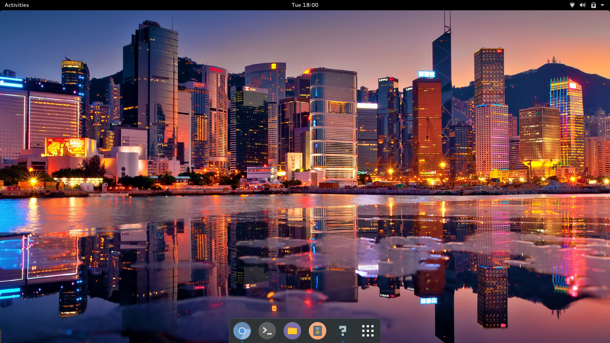

Cool third-part projects
Here are some cool projects that I like and think they deserve a
spot on this list
- Wayland
- Gnome 3
- Vulkan
Wayland is intended as a simpler replacement for X, easier to develop and maintain and it's supposed to simplify the whole graphics stack by forcing everything through a standard DRM stack straight into the kernel and managing compositing itself.
I'm currently using wayland as the backend of Gnome 3, another cool project that deserves to be in the list
Gnome 3 is an easy and elegant way to use your computer. It is designed to put you in control and bring freedom to everybody.
My current D.E. (desktop environment) is Gnome 3, more specifically Gnome 3.18, and I have to say that I used to be a Gnome 2 lover and Gnome 3 hatter, but everything changed when I wanted to try Wayland and one of the only options was Gnome 3, and I have to say that Gnome 3, thankfully, evolved from a slow, resource demanding and buggy D.E. into a very clean and polished D.E.
Bellow there is a printscreen of my current Gnome 3.18 look running on Wayland
{kind=link}
Vulkan is the new generation, open standard API for high-efficiency access to graphics and compute on modern GPUs. This ground-up design, previously referred to as the Next Generation OpenGL Initiative, provides applications direct control over GPU acceleration for maximized performance and predictability.
Vulkan should be released before the end of 2015. As son as Vulkan is released I will make a post about it with my impressions using the new API with C++. For now. a good source for the latest news on Vulkan is this site